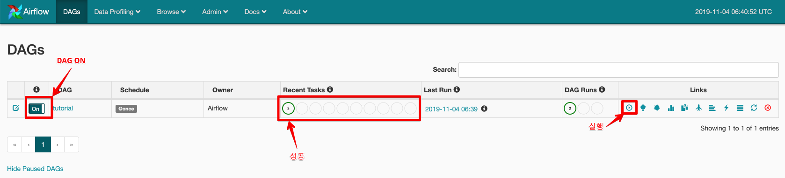

[Airflow] 설치
설치 환경
- CentOS 7.7
- airflow 1.10.5
airflow는 단일 서버에서 설치하는 방법외에 python celery모듈을 이용하여 webserver와 worker서버를 분리 할수 있다. 아래는 webserver 1대와 worker서버 2대에 설치하는방법이며, 이때 Celery를 이용하여 multiple worker를 설정하려면 추가적으로 Redis 또는 RabbitMQ, Mysql 서버를 추가적으로 필요로 한다.
보통의 구성으로는
- web server: airflow webserver, airflow scheduler, mysql, redis 설치
- worker server : airflow worker 와 같은 식으로 설치한다.
airflow 모듈
airflow는 역할에 따라 몇가지 모듈이 존재한다.
- airflow webserver: 웹UI를 통해 workflow를 컨트롤 하기 위함
- airflow scheduler: DAG 파일을 통록된 workflow를 지정된 시간에 동작시키는 역할
- airflow worker: scheduler에 의해 할당된 workflow를 실제로 동작시킴
- airflow kerberos(옵션) : 만약 kerberos 인증된 데이터소스(ex- 하둡)에 접근할때 커버로스 인증티켓을 주기적으로 갱신하기 위함
사전설치
## 파이썬 3.6 설치 및 virtualenv 설치
$ sudo yum install -y python3 python3-devel
$ sudo pip3 intall virtualenv
##추가 필요 모듈 설치
$ sudo yum install -y gcc gcc-c++ cyrus-sasl-devel mysql-devel
## https://github.com/inishchith/autoenv
## virtualenv를 편하게 사용하기 위해 autoenv 설치
## virtualenv를 활성화 하려면 매번 해당 디렉토리에 들어가서 source ./bin/activate 를 실행해줘야 한다.
## autoenv는 디렉토리 이동시 .env 파일의 유무를 확인한후 .env를 실행한다.
## 따라서 .env 파일을 만들고 virtualenv activate를 써주면 매번 activate를 해줄필요 없이 자동으로 처리된다.
$ sudo pip3 install autoenv
$ echo "source `which activate.sh`" >> ~/.bash_profile
$ source ~/.bash_profile
1. airflow 설치 (모든 서버)
$ mkdir ${airflow 설치 디렉토리}
## airflow_home 환경변수 지정, 지정된 위치에 airflow가 설치되게 된다.
$ echo 'export AIRFLOW_HOME=${airflow 설치 디렉토리}' >> ~/.bash_profile
$ source ~/.bash_profile
$ cd ${airflow 설치 디렉토리}
## 가상 환경 설치
$ virtualenv -p python3 venv
$ echo 'source $AIRFLOW_HOME/venv/bin/activate' >> .env
## airflow_home 디렉토리로 다시 접근하면 autoenv에 의해 .env가 읽히고 윗줄의 source 설정이 읽힌다.
## 아래와 같이 나와야 autoenv 설정이 제대로 된것이다.
$ cd $AIRFLOW_HOME
autoenv:
autoenv: WARNING:
autoenv: This is the first time you are about to source /${AIRFLOW_HOME}/.env:
autoenv:
autoenv: --- (begin contents) ---------------------------------------
autoenv: source ./venv/bin/activate
autoenv:
autoenv: --- (end contents) -----------------------------------------
autoenv:
autoenv: Are you sure you want to allow this? (y/N) y
$ pip3 install apache-airflow==1.10.5
## initdb를 하면 초기 설정파일이 airflow_home에 생성된다.
$ airflow initdb
## dag가 저장될 디렉토리 생성
$ mkdir dags
$ ls -ah
.env airflow.cfg airflow.db dags logs unittests.cfg venv
## 추가 모듈 설치
pip3 install apache-airflow[hive]==1.10.5
## 만약 OSError: mysql_config not found 에러가 발생하면 sudo yum install mysql-devel을 설치한다.
pip3 install apache-airflow[mysql]==1.10.5
pip3 install apache-airflow[celery]==1.10.5
pip3 install sasl
추가적으로 Redis와 Mysql을 설치해야하는데, 필자는 사내에서 사용하는 Redis와 Mysql 인스턴스가 있어 따로 설치법을 작성하지 않겠다. Redis 설치법은 여기를, Mysql 설치법은 여기를 참고하면 되겠다.
2. Airflow 설정 (모든 서버)
vi ./airflow.cfg
## 아래의 설정 이외의 것들은 모두 기본설정
default_timezone = Asia/Seoul
executor = CeleryExecutor
sql_alchemy_conn = mysql://{db user}:{db pw}@호스트:아이피/{database}
load_examples = False
broker_url = redis://:{Redis pw}@{Redis Host}:{Redis port}/0
result_backend = db+mysql://{db user}:{db pw}@호스트:아이피/{database}
설정 완료 후 mysql에 각종 테이블들을 생성한다. 이는 하나의 서버에서만 진행한다.
$ airflow initdb
3. 실행
webserver 용 서버
- nohup airflow webserver > /dev/null 2>&1 &
- nohup airflow scheduler > /dev/null 2>&1 &
worker 용서버
- nohup airflow worker > /dev/null 2>&1 &
4. DAG 테스트
아래는 airflow 홈에 있는 예제를 약간 수정한 코드이다. 이 코드를 tutorial.py로 저장하고 각서버(webserver, worker) dags 폴더에 넣어보자.
"""
Code that goes along with the Airflow tutorial located at:
https://github.com/apache/airflow/blob/master/airflow/example_dags/tutorial.py
"""
from airflow import DAG
from airflow.operators.bash_operator import BashOperator
from datetime import datetime, timedelta
default_args = {
'owner': 'Airflow',
'depends_on_past': False,
'start_date': datetime(2015, 6, 1),
'email': ['airflow@example.com'],
'email_on_failure': False,
'email_on_retry': False,
'retries': 1,
'retry_delay': timedelta(minutes=5),
'catchup': False
# 'queue': 'bash_queue',
# 'pool': 'backfill',
# 'priority_weight': 10,
# 'end_date': datetime(2016, 1, 1),
}
dag = DAG('tutorial', default_args=default_args, schedule_interval='@once')
# t1, t2 and t3 are examples of tasks created by instantiating operators
t1 = BashOperator(
task_id='print_date',
bash_command='date',
dag=dag)
t2 = BashOperator(
task_id='sleep',
bash_command='sleep 5',
retries=3,
dag=dag)
templated_command = """
{% for i in range(5) %}
echo "{{ ds }}"
echo "{{ macros.ds_add(ds, 7)}}"
echo "{{ params.my_param }}"
{% endfor %}
"""
t3 = BashOperator(
task_id='templated',
bash_command=templated_command,
params={'my_param': 'Parameter I passed in'},
dag=dag)
t2.set_upstream(t1)
t3.set_upstream(t1)
dags에 파일이 생성되고 잠시 후 DAG를 웹페이지에서 확인할 수 있다.
http://webserver_ip:8080 으로 접속하면 아래와 같은 페이지를 볼수 있다. 
위 이미지와 같이 DAG를 On 시킨뒤 실행 버튼을 누르면 정상적으로 성공하면 제대로 설정이 된것이다.